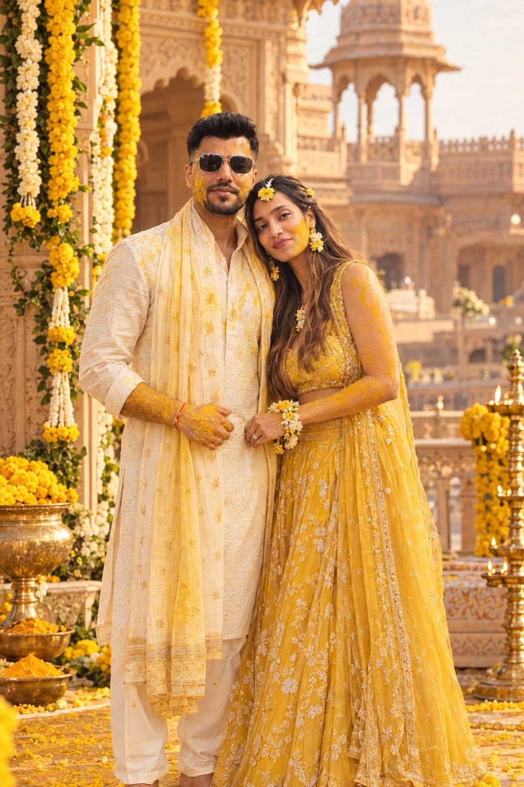
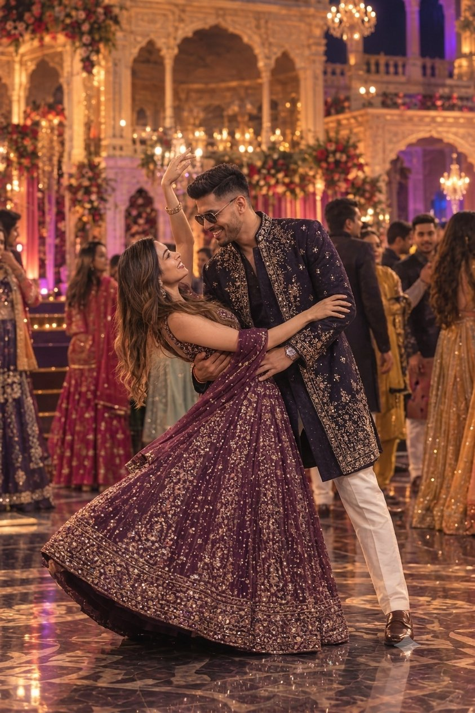
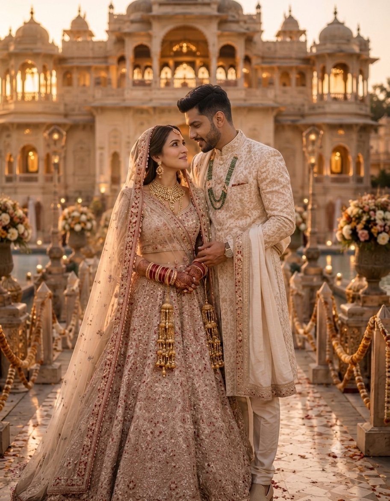

<title>Kanika &amp; Prateek</title>
<meta name="viewport" content="width=device-width, initial-scale=1" />
<link rel="preconnect" href="https://fonts.googleapis.com">
<link rel="preconnect" href="https://fonts.gstatic.com" crossorigin>
<link href="https://fonts.googleapis.com/css2?family=Cinzel:wght@400;600;700;900&family=Cormorant+Garamond:ital,wght@0,400;0,500;0,600;1,400;1,500;1,600&family=Jost:wght@300;400;500;600&display=swap" rel="stylesheet">
<script src="https://cdnjs.cloudflare.com/ajax/libs/gsap/3.12.5/gsap.min.js"></script>
<script src="https://cdnjs.cloudflare.com/ajax/libs/gsap/3.12.5/ScrollTrigger.min.js"></script>
<script src="https://cdn.jsdelivr.net/npm/lenis@1.3.26/dist/lenis.min.js"></script>

<style>
  /* ============================================================
     KANIKA & PRATEEK — one continuous cinematic scroll.
     A single committed visual world (not a themeable app): antique
     gold, sandstone, marigold, emerald-indigo night, deep wine,
     ivory-and-champagne finale. Painted explicitly throughout so
     it holds regardless of host background.
     ============================================================ */

  :root{
    --sandstone:      #efe4c9;
    --ink:            #241407;

    --gold:           #c79a3d;
    --gold-light:     #e9cd85;
    --gold-deep:      #8f6b23;

    --marigold:       #d9812c;
    --marigold-light: #f2b854;
    --marigold-bg:    #2a1608;

    --indigo:         #10112a;
    --indigo-deep:    #05060f;
    --emerald:        #0c3b2e;
    --cream:          #f7efdc;

    --dusk-1:         #2c1638;
    --dusk-2:         #7a2f3c;
    --dusk-3:         #d9762f;
    --dusk-4:         #f2b854;

    --maroon:         #4a0d1a;
    --maroon-deep:    #2a060e;

    --ember:          #ff8a3d;

    --ivory:          #efe6d3;
    --champagne:      #cbb27f;
    --near-black:     #0c0a08;

    /* one quiet ink canvas shared by every scene */
    --ink-1:          #16110d;
    --ink-2:          #0a0705;

    --serif-display:  'Cinzel', 'Times New Roman', serif;
    --serif-script:   'Cormorant Garamond', 'Georgia', serif;
    --sans-ui:        'Jost', -apple-system, 'Segoe UI', sans-serif;

    color-scheme: dark;
  }

  *,*::before,*::after{ box-sizing:border-box; }
  html{ background:var(--indigo-deep); }
  @media (prefers-reduced-motion: reduce){ html{ scroll-behavior:auto; } }

  body{
    margin:0;
    background:var(--indigo-deep);
    color:var(--cream);
    font-family:var(--sans-ui);
    -webkit-font-smoothing:antialiased;
    overflow-x:hidden;
  }

  img{ max-width:100%; display:block; }
  a{ color:inherit; }
  button{ font-family:inherit; }

  /* ---------- shared type helpers ---------- */
  .kicker{
    font-family:var(--sans-ui); font-size:.68rem; font-weight:500;
    letter-spacing:.34em; text-transform:uppercase; opacity:.82;
  }
  .divider{ width:56px; height:1px; background:linear-gradient(90deg,transparent,currentColor,transparent); opacity:.7; }

  canvas.ambient{ position:absolute; inset:0; width:100%; height:100%; pointer-events:none; }

  /* ============================================================
     SIDE PROGRESS RAIL
     ============================================================ */
  .rail{
    position:fixed; right:calc(clamp(10px,2.4vw,30px) + env(safe-area-inset-right,0px)); top:50%; transform:translateY(-50%);
    z-index:80; display:flex; flex-direction:column; align-items:center; gap:14px;
  }
  .rail button{ appearance:none; border:none; background:none; padding:6px; cursor:pointer; display:flex; align-items:center; justify-content:center; transition:transform .3s cubic-bezier(.22,1,.36,1); }
  .rail button:hover{ transform:scale(1.15); }
  .rail .dot{ width:8px; height:8px; border-radius:50%; border:1.4px solid var(--gold-light); background:transparent; transition:background .3s, transform .3s, box-shadow .3s; }
  .rail button.active .dot{ background:var(--gold-light); transform:scale(1.35); box-shadow:0 0 10px var(--gold-light); }
  .rail button:focus-visible{ outline:2px solid var(--gold-light); outline-offset:4px; border-radius:50%; }
  .rail .rail-label{
    position:absolute; right:26px; font-size:.6rem; letter-spacing:.18em; text-transform:uppercase;
    white-space:nowrap; color:var(--cream); background:rgba(5,6,15,.75); padding:4px 9px;
    border:1px solid rgba(233,205,133,.35); opacity:0; transform:translateX(6px); transition:opacity .25s ease, transform .25s cubic-bezier(.22,1,.36,1);
  }
  .rail button:hover .rail-label, .rail button:focus-visible .rail-label{ opacity:1; transform:translateX(0); }
  @media (max-width:680px){ .rail{ display:none; } }
  @media (max-height:480px) and (orientation:landscape){ .rail{ gap:9px; } .rail .rail-label{ display:none; } }


  /* ============================================================
     PIN SCENES — each is one full-viewport "shot"; JS pins it for
     an extra scroll distance and scrubs a timeline across that.
     ============================================================ */
  .scene{
    position:relative; height:100svh; min-height:480px;
    display:flex; align-items:center; justify-content:center;
    overflow:hidden;
  }
  .scene-bg{ position:absolute; inset:0; z-index:0; }
  .scene-inner{ position:relative; z-index:4; width:100%; }
  .wrap{ max-width:1180px; margin-inline:auto; padding-inline:clamp(18px,5vw,64px); }

  /* ---------- reduced-motion safety: show every end-state ---------- */
  body.reduced .scene{ height:auto; min-height:100svh; padding-block:60px; }

  /* ---------- short / landscape viewports: keep everything in frame ---------- */
  @media (max-height:520px){
    .scene{ min-height:340px; }
    .curtain-names .n{ font-size:clamp(2rem,7vh,3.4rem); }
    .curtain-line{ font-size:clamp(1rem,4vh,1.5rem); }
    .act-title, .finale-names{ font-size:clamp(1.6rem,6vh,2.6rem) !important; }
    .curtain-scroll-cue{ bottom:4%; }
    .wrap{ padding-block:12px; }
  }

  /* ============================================================
     SCENE 0 — CURTAIN
     ============================================================ */
  .scene-curtain .scene-bg{
    background:
      radial-gradient(70% 55% at 50% 30%, rgba(0,0,0,.35), transparent 65%),
      linear-gradient(180deg, #0e0303 0%, #050101 60%, #020000 100%);
  }
  /* .curtain-panel is the GSAP-controlled slider (position + open/close
     transform). Its fabric TEXTURE sits on a nested, static .curtain-fabric
     child; the only motion is a smooth, scroll-driven ripple applied to
     the panel's own clip-path from JS (see the curtain scene's ScrollTrigger) --
     no idle/looping animation, so it never feels busy or restless. */
  .curtain-panel{
    position:absolute; top:0; bottom:0; width:53%; overflow:hidden;
    will-change:transform;
    box-shadow: 0 0 120px rgba(0,0,0,.7) inset, 0 0 60px rgba(0,0,0,.6);
    z-index:3;
  }
  .curtain-fabric{
    position:absolute; inset:0;
    /* two layered fold scales (broad pleats + fine secondary creases) for
       a heavier, less uniform, more "real silk" look than one flat repeat */
    background-image:
      linear-gradient(180deg, rgba(255,255,255,.24) 0%, rgba(255,255,255,0) 10%, rgba(255,255,255,0) 70%, rgba(0,0,0,.46) 100%),
      repeating-linear-gradient(90deg, rgba(0,0,0,.28) 0%, transparent 6%, transparent 13%, rgba(0,0,0,.22) 19%, transparent 25%),
      repeating-linear-gradient(90deg,
        #380303 0%, #6e0a0a 8%, #9c1414 17%, #c9282a 26%, #9c1414 35%, #6e0a0a 44%, #430404 50%);
    background-blend-mode: overlay, multiply, normal;
    background-size: 100% 100%, 27px 100%, 64px 100%;
  }
  .curtain-fabric::after{
    content:''; position:absolute; inset:0;
    background-image: radial-gradient(circle, rgba(233,205,133,.32) 1.3px, transparent 1.5px);
    background-size: 34px 34px; opacity:.35; mix-blend-mode:soft-light;
  }
  .curtain-fabric::before{
    /* bottom fringe / tassel trim */
    content:''; position:absolute; left:0; right:0; bottom:0; height:16px;
    background-image: radial-gradient(circle, var(--gold-light) 3px, transparent 3.4px);
    background-size: 16px 16px; background-position:8px 4px;
    opacity:.85; filter:drop-shadow(0 2px 2px rgba(0,0,0,.5));
  }
  .curtain-left{ left:0; border-right:1px solid rgba(233,205,133,.55); }
  .curtain-right{ right:0; border-left:1px solid rgba(233,205,133,.55); }
  body.reduced .curtain-left{ transform:translateX(-102%); }
  body.reduced .curtain-right{ transform:translateX(102%); }
  .curtain-rod{
    position:absolute; top:0; left:-2%; right:-2%; height:15px; z-index:6;
    background:linear-gradient(180deg, var(--gold-light) 0%, var(--gold) 45%, var(--gold-deep) 100%);
    box-shadow:0 3px 14px rgba(0,0,0,.6);
  }
  .curtain-rod::after{
    content:''; position:absolute; inset:0;
    background-image: radial-gradient(circle, rgba(255,255,255,.5) 1.5px, transparent 1.7px);
    background-size: 30px 100%; background-position:center;
  }

  /* ---------- bride & groom, as silhouettes only: no faces, identified
     purely by dress shape (dupatta+lehenga / turban+sherwani), gliding
     toward each other as the curtain parts. Sits behind the curtain
     panels so it's revealed by the opening, not layered on top of it. ---------- */
  .couple-silhouettes{ position:absolute; inset:0; z-index:2; pointer-events:none; overflow:hidden; }
  .couple-figure{ position:absolute; bottom:0; width:clamp(64px,9.5vw,108px); opacity:0; filter:drop-shadow(0 8px 18px rgba(0,0,0,.55)); }
  .couple-figure svg{ display:block; width:100%; height:auto; }
  .couple-figure .fig-fill{ fill:url(#fig-gradient); }
  .couple-figure .fig-fold{ stroke:rgba(42,22,8,.28); stroke-width:1.4; stroke-linecap:round; fill:none; }
  .couple-figure.bride{ left:50%; }
  .couple-figure.groom{ left:50%; }
  body.reduced .couple-figure{ opacity:1; }
  body.reduced .couple-figure.bride{ transform:translate(calc(-100% - 10px), 0); }
  body.reduced .couple-figure.groom{ transform:translate(10px, 0); }

  .curtain-copy{
    position:relative; z-index:5; text-align:center; padding-inline:20px;
  }
  .curtain-line{
    font-family:var(--serif-script); font-style:italic; font-weight:500;
    font-size:clamp(1.3rem,3.4vw,1.9rem); color:var(--cream); opacity:.92;
  }
  .curtain-names{
    position:absolute; inset:0; display:flex; align-items:center; justify-content:center;
    opacity:0;
  }
  body.reduced .curtain-names{ opacity:1; position:static; margin-top:.6em; }
  body.reduced .curtain-line.fade-out{ display:none; }
  .curtain-names .n{
    font-family:var(--serif-script); font-style:italic; font-weight:600;
    font-size:clamp(2.6rem,8vw,4.6rem); color:var(--gold-light);
  }
  .curtain-scroll-cue{
    position:absolute; bottom:8%; left:50%; transform:translateX(-50%);
    font-size:.66rem; letter-spacing:.32em; text-transform:uppercase; opacity:.7;
    display:flex; flex-direction:column; align-items:center; gap:.5em; z-index:6;
  }
  body.reduced .curtain-scroll-cue{ display:none; }
  .curtain-scroll-cue svg{ animation:bob 2.2s ease-in-out infinite; }
  @keyframes bob{ 0%,100%{transform:translateY(0)} 50%{transform:translateY(6px)} }
  @media (prefers-reduced-motion: reduce){ .curtain-scroll-cue svg{ animation:none; } }

  /* ============================================================
     SCENE 1 — INVITATION SCROLL
     ============================================================ */
  .scene-invitation .scene-bg{
    background: radial-gradient(80% 60% at 50% 10%, rgba(199,154,61,.16), transparent 60%), linear-gradient(180deg, var(--ink-1), var(--ink-2) 75%);
  }
  .pillar{
    position:absolute; top:6%; bottom:6%; width:18px;
    background:linear-gradient(180deg, var(--gold-light), var(--gold-deep));
    box-shadow:0 0 24px rgba(199,154,61,.4);
    opacity:.85; border-radius:3px;
  }
  .pillar.left{ left:8%; } .pillar.right{ right:8%; }
  @media (max-width:680px){ .pillar{ display:none; } }

  .scroll-card{
    position:relative; width:min(560px,84vw); margin-inline:auto;
    padding:clamp(28px,6vw,56px) clamp(22px,5vw,48px);
    background:linear-gradient(160deg,#f7efdc,#e6d6ab);
    border:1px solid rgba(199,154,61,.7);
    color:#2a1608; text-align:center;
    clip-path:inset(46% 0% 46% 0% round 2px);
    box-shadow:0 30px 70px rgba(0,0,0,.55);
  }
  body.reduced .scroll-card{ clip-path:inset(0 0 0 0 round 2px); }
  .scroll-card::before, .scroll-card::after{
    content:''; position:absolute; left:14px; right:14px; height:1px; background:rgba(143,107,35,.5);
  }
  .scroll-card::before{ top:14px; } .scroll-card::after{ bottom:14px; }
  .scroll-card .sc-eyebrow{ font-size:.68rem; letter-spacing:.28em; text-transform:uppercase; opacity:.78; margin-bottom:1em; }
  .scroll-card .sc-names{ font-family:var(--serif-script); font-style:italic; font-weight:600; font-size:clamp(1.9rem,6vw,3rem); margin:.2em 0 .5em; }
  .scroll-card .sc-body{ font-family:var(--serif-script); font-size:clamp(1.05rem,2.2vw,1.3rem); max-width:32ch; margin:0 auto 1.1em; opacity:.92; }
  .scroll-card .sc-date{ font-family:var(--serif-display); letter-spacing:.14em; font-size:1rem; margin-bottom:.4em; }
  .scroll-card .sc-venue{ font-size:.8rem; letter-spacing:.08em; opacity:.85; }

  /* ============================================================
     SHARED PHOTOGRAPHIC ACT (Haldi / Sangeet / Sundowner / Reception)
     ============================================================ */
  .act-grid{
    display:grid; grid-template-columns:1.05fr 1fr; gap:clamp(24px,5vw,72px); align-items:center;
  }
  .act-reverse .act-grid{ grid-template-columns:1fr 1.05fr; }
  .act-reverse .act-figure{ order:2; } .act-reverse .act-copy{ order:1; }
  @media (max-width:860px){
    .act-grid{ grid-template-columns:1fr; }
    .act-reverse .act-figure, .act-reverse .act-copy{ order:initial; }
  }

  .act-figure{ perspective:1400px; }
  .frame{
    position:relative; padding:12px; border:1px solid rgba(233,205,133,.55);
    background:linear-gradient(180deg,rgba(255,255,255,.05),transparent);
    transform-style:preserve-3d; will-change:transform;
    opacity:0; transform:rotateY(24deg) scale(.88);
  }
  body.reduced .frame{ opacity:1; transform:none; }
  .frame::before{ content:''; position:absolute; inset:5px; border:1px solid rgba(233,205,133,.32); pointer-events:none; }
  .frame-corner{ position:absolute; width:22px; height:22px; color:var(--gold-light); opacity:.9; }
  .frame-corner.tl{ top:-1px; left:-1px; border-top:2px solid; border-left:2px solid; }
  .frame-corner.tr{ top:-1px; right:-1px; border-top:2px solid; border-right:2px solid; }
  .frame-corner.bl{ bottom:-1px; left:-1px; border-bottom:2px solid; border-left:2px solid; }
  .frame-corner.br{ bottom:-1px; right:-1px; border-bottom:2px solid; border-right:2px solid; }

  .photo-mask{ position:relative; overflow:hidden; aspect-ratio:4/5; }
  .photo-mask img{ position:absolute; inset:0; width:100%; height:100%; object-fit:cover; object-position:center 22%; }
  .photo-sheen{ position:absolute; inset:0; background:linear-gradient(160deg,rgba(255,255,255,.14),transparent 42%); mix-blend-mode:overlay; }

  .act-copy > *{ opacity:0; transform:translateY(18px); }
  body.reduced .act-copy > *{ opacity:1; transform:none; }
  .act-figure{ animation:breathe 7.5s ease-in-out infinite; }
  @keyframes breathe{ 0%,100%{ transform:scale(1); } 50%{ transform:scale(1.012); } }
  body.reduced .act-figure{ animation:none; }
  .act-title{
    font-family:var(--serif-display); font-weight:700; text-transform:uppercase; line-height:1.05;
    letter-spacing:.02em; text-wrap:balance; margin:.28em 0 .3em; font-size:clamp(2rem,5.2vw,3.5rem);
  }
  .act-tagline{ font-family:var(--serif-script); font-style:italic; font-weight:500; font-size:clamp(1.02rem,2vw,1.28rem); max-width:36ch; opacity:.92; margin-bottom:1.4em; }
  .detail-row{ display:flex; flex-wrap:wrap; gap:1.4em 2.2em; margin:0; }
  .detail dt{ font-size:.63rem; font-weight:500; letter-spacing:.24em; text-transform:uppercase; opacity:.7; margin-bottom:.35em; }
  .detail dd{ margin:0; font-family:var(--serif-script); font-size:1.2rem; font-weight:600; font-variant-numeric:tabular-nums; }

  /* One quiet, consistent ink canvas for every act — identity comes
     from a single soft accent glow and the heading colour, never from
     a loud full-bleed gradient. Keeps the whole journey feeling like
     one elegant object rather than five clashing backdrops. */
  .act-haldi .scene-bg, .act-sangeet .scene-bg, .act-sundowner .scene-bg, .act-reception .scene-bg{
    background: linear-gradient(180deg, var(--ink-1) 0%, var(--ink-2) 100%);
  }
  .act-haldi .scene-bg{ background-image: radial-gradient(58% 50% at 88% 6%, rgba(242,184,84,.16), transparent 70%), linear-gradient(180deg, var(--ink-1) 0%, var(--ink-2) 100%); }
  .act-haldi .act-title, .act-haldi .kicker{ color:var(--marigold-light); }
  .act-haldi .frame{ border-color:rgba(233,205,133,.5); } .act-haldi .frame-corner{ color:var(--marigold-light); }

  .act-sangeet .scene-bg{ background-image: radial-gradient(58% 50% at 12% 6%, rgba(12,110,84,.22), transparent 70%), linear-gradient(180deg, var(--ink-1) 0%, var(--ink-2) 100%); }
  .act-sangeet .act-title, .act-sangeet .kicker{ color:var(--gold-light); }
  .act-sangeet .frame{ border-color:rgba(233,205,133,.5); }

  .act-sundowner .scene-bg{ background-image: radial-gradient(60% 55% at 88% 8%, rgba(217,118,47,.2), transparent 70%), linear-gradient(180deg, var(--ink-1) 0%, var(--ink-2) 100%); }
  .act-sundowner .act-title{ color:var(--gold-light); } .act-sundowner .kicker{ color:var(--gold-light); }
  .act-sundowner .frame{ border-color:rgba(233,205,133,.5); } .act-sundowner .frame-corner{ color:var(--gold-light); }

  .act-reception .scene-bg{ background-image: radial-gradient(60% 55% at 88% 6%, rgba(203,178,127,.16), transparent 70%), linear-gradient(180deg, var(--ink-1) 0%, var(--ink-2) 100%); }
  .act-reception .act-title{ color:var(--champagne); } .act-reception .kicker{ color:var(--champagne); }
  .act-reception .frame{ border-color:rgba(203,178,127,.55); padding:8px; } .act-reception .frame-corner{ color:var(--champagne); }
  .act-reception .act-grid{ grid-template-columns:1.35fr 1fr; }
  @media (max-width:860px){ .act-reception .act-grid{ grid-template-columns:1fr; } }

  /* Sangeet's source photo is a wide dance-floor shot — zoom and
     re-centre it on the couple so the frame reads at the same visual
     scale as the tighter Haldi/Sundowner/Reception portraits. */
  .act-sangeet .photo-mask img{ transform:scale(1.55); transform-origin:41% 38%; object-position:41% 30%; }

  /* ============================================================
     TRANSITION VEILS — full-bleed crossfade layers between acts
     ============================================================ */
  .veil{ position:absolute; inset:0; opacity:0; z-index:1; }
  body.reduced .veil{ display:none; }

  /* ============================================================
     SCENE — WEDDING (mandap + fire, no photo)
     ============================================================ */
  .scene-wedding .scene-bg{ background:linear-gradient(180deg,#060714 0%, var(--indigo-deep) 60%); }
  .diya-field{ position:absolute; inset:0; z-index:2; }
  .mandap{ position:relative; z-index:4; display:flex; flex-direction:column; align-items:center; text-align:center; }
  .mandap-structure{ position:relative; width:min(420px,80vw); height:220px; margin-bottom:1.6em; }
  .mandap-pillar{ position:absolute; bottom:0; width:14px; height:170px; background:linear-gradient(180deg,var(--gold-light),var(--gold-deep)); opacity:0; transform:scaleY(.4); transform-origin:bottom; box-shadow:0 0 18px rgba(199,154,61,.5); }
  body.reduced .mandap-pillar{ opacity:1; transform:none; }
  .mandap-pillar.p1{ left:6%; } .mandap-pillar.p2{ left:32%; } .mandap-pillar.p3{ right:32%; } .mandap-pillar.p4{ right:6%; }
  .mandap-canopy{ position:absolute; top:8px; left:2%; right:2%; height:26px; border-radius:0 0 60px 60px / 0 0 30px 30px; background:linear-gradient(180deg,var(--gold-light),var(--gold-deep)); opacity:0; transform:translateY(-16px); box-shadow:0 0 22px rgba(199,154,61,.55); }
  body.reduced .mandap-canopy{ opacity:1; transform:none; }
  .flower-row{ position:absolute; top:30px; left:2%; right:2%; display:flex; justify-content:space-between; opacity:0; }
  body.reduced .flower-row{ opacity:1; }
  .flower-row span{ width:9px; height:9px; border-radius:50%; background:var(--marigold-light); box-shadow:0 0 8px var(--marigold); }
  .mandap-flame{ position:absolute; bottom:6px; left:50%; translate:-50% 0; width:26px; height:38px; opacity:0; }
  body.reduced .mandap-flame{ opacity:1; }
  .flame-core{ position:absolute; inset:0; border-radius:50% 50% 50% 50% / 62% 62% 38% 38%; background:radial-gradient(circle at 50% 70%, #fff2c8, var(--ember) 55%, transparent 75%); filter:blur(.3px); animation:flicker 2.6s ease-in-out infinite; transform-origin:50% 90%; }
  body.reduced .flame-core{ animation:none; }
  @keyframes flicker{
    0%,100%{ transform:scaleY(1) scaleX(1) rotate(0deg); opacity:1; }
    30%{ transform:scaleY(1.08) scaleX(.94) rotate(-1.5deg); opacity:.92; }
    55%{ transform:scaleY(.95) scaleX(1.05) rotate(1.5deg); opacity:1; }
    80%{ transform:scaleY(1.05) scaleX(.97) rotate(-1deg); opacity:.95; }
  }
  .wedding-copy > *{ opacity:0; transform:translateY(18px); }
  body.reduced .wedding-copy > *{ opacity:1; transform:none; }
  .wedding-copy .act-title{ color:var(--gold-light); }
  .wedding-copy .kicker{ color:var(--gold-light); }
  .wedding-copy .act-tagline{ margin-inline:auto; }

  /* ============================================================
     SCENE — FINALE (lights off / envelope opens)
     ============================================================ */
  .scene-finale .scene-bg{ background:linear-gradient(180deg,#0a0603 0%, var(--near-black) 60%); }
  .finale-inner{ position:relative; z-index:5; text-align:center; display:flex; flex-direction:column; align-items:center; }
  .envelope-wrap{ perspective:1200px; margin-bottom:1.6em; }
  .envelope{ position:relative; width:min(400px,80vw); aspect-ratio:3/2; }
  .envelope-body{ position:absolute; inset:0; background:linear-gradient(160deg,var(--ivory),#ddc99a); border:1px solid rgba(199,154,61,.6); box-shadow:0 30px 60px rgba(0,0,0,.5); }
  .envelope-card{ position:absolute; left:8%; right:8%; top:10%; bottom:14%; background:var(--ivory); border:1px solid rgba(199,154,61,.4); opacity:0; display:flex; align-items:center; justify-content:center; padding:10px; }
  body.reduced .envelope-card{ opacity:1; }
  .envelope-card p{ font-family:var(--serif-script); font-style:italic; color:#2a1608; font-size:clamp(.72rem,2.4vw,.92rem); margin:0; }
  .envelope-flap{ position:absolute; top:0; left:0; right:0; height:56%; background:linear-gradient(160deg,#efe0bd,#cdb689); clip-path:polygon(0 0,100% 0,50% 100%); transform-origin:top center; z-index:3; box-shadow:0 6px 16px rgba(0,0,0,.25); }
  body.reduced .envelope-flap{ transform:rotateX(180deg); }
  /* sits as a SIBLING of .envelope-flap (not a child) so the flap's own
     clip-path (it's a triangle) never slices the round seal down to a
     sliver — it needs to read as one whole, unbroken wax seal while the
     envelope is closed. top:56% lines it up with the flap's own tip. */
  .envelope-seal{ position:absolute; top:56%; left:50%; translate:-50% -50%; width:52px; height:52px; border-radius:50%; background:radial-gradient(circle at 35% 30%,var(--gold-light),var(--gold-deep)); display:flex; align-items:center; justify-content:center; font-family:var(--serif-display); color:#2a1608; font-size:1.05rem; z-index:4; box-shadow:0 4px 12px rgba(0,0,0,.4); backface-visibility:hidden; }
  .envelope-seal::after{ content:''; position:absolute; inset:-3px; border-radius:50%; box-shadow:0 0 0 0 rgba(233,205,133,.7); pointer-events:none; }
  body.reduced .envelope-seal{ opacity:0; }

  .finale-text{ opacity:0; margin-top:.4em; }
  body.reduced .finale-text{ opacity:1; }
  .finale-names{ font-family:var(--serif-script); font-style:italic; font-weight:600; font-size:clamp(2rem,6vw,3.2rem); margin:0 0 .3em; color:var(--gold-light); }
  .finale-line{ font-family:var(--serif-script); font-size:clamp(1.05rem,2.4vw,1.3rem); opacity:.92; margin:.2em 0; }
  .finale-meta{ font-size:.82rem; letter-spacing:.08em; opacity:.78; margin-top:.9em; }
  .finale-signoff{ font-family:var(--serif-script); font-style:italic; font-size:1.15rem; margin-top:1.3em; opacity:.9; }
  .finale-actions{ display:flex; gap:14px; flex-wrap:wrap; justify-content:center; margin-top:1.8em; }
  .btn{
    font-family:var(--sans-ui); font-size:.76rem; letter-spacing:.16em; text-transform:uppercase;
    padding:.9em 1.8em; border:1px solid var(--gold-light); color:var(--gold-light); text-decoration:none;
    background:transparent; cursor:pointer; transition:background .3s ease, color .3s ease, transform .3s cubic-bezier(.22,1,.36,1), box-shadow .3s ease;
  }
  .btn:hover, .btn:focus-visible{ background:var(--gold-light); color:#2a1608; transform:translateY(-3px); box-shadow:0 10px 24px rgba(199,154,61,.35); }
  .btn:active{ transform:translateY(-1px); transition-duration:.1s; }
  @media (prefers-reduced-motion: reduce){ .btn:hover, .btn:focus-visible{ transform:none; } }
  .btn.ghost{ border-color:rgba(233,205,133,.5); color:var(--cream); }
  .btn.ghost:hover{ background:rgba(233,205,133,.15); color:var(--cream); }

  .single-diya{ position:absolute; left:50%; top:38%; translate:-50% -50%; width:10px; height:10px; border-radius:50%; z-index:3; opacity:0; box-shadow:0 0 0 rgba(255,178,90,0); }
  body.reduced .single-diya{ display:none; }
</style>

<!-- ================= SIDE PROGRESS RAIL ================= -->
<nav class="rail" aria-label="Wedding schedule sections">
  <button data-target="scene-haldi" aria-label="Haldi"><span class="dot"></span><span class="rail-label">Haldi</span></button>
  <button data-target="scene-sangeet" aria-label="Sangeet"><span class="dot"></span><span class="rail-label">Sangeet</span></button>
  <button data-target="scene-sundowner" aria-label="Sundowner Wedding Carnival"><span class="dot"></span><span class="rail-label">Sundowner</span></button>
  <button data-target="scene-wedding" aria-label="Wedding"><span class="dot"></span><span class="rail-label">Wedding</span></button>
  <button data-target="scene-reception" aria-label="Reception"><span class="dot"></span><span class="rail-label">Reception</span></button>
</nav>

<main>

  <!-- ================= SCENE 0 — CURTAIN ================= -->
  <section class="scene scene-curtain" id="scene-curtain">
    <div class="scene-bg"></div>
    <canvas class="ambient" id="canvas-curtain" aria-hidden="true"></canvas>
    <div class="couple-silhouettes" aria-hidden="true">
      <div class="couple-figure bride" id="silhouette-bride">
        <svg viewBox="0 0 100 240" fill="none" xmlns="http://www.w3.org/2000/svg">
          <defs>
            <linearGradient id="fig-gradient" x1="0%" y1="0%" x2="100%" y2="100%">
              <stop offset="0%" stop-color="#e9cd85"/>
              <stop offset="100%" stop-color="#8f6b23"/>
            </linearGradient>
          </defs>
          <path class="fig-fill" d="M50,6 C38,6 29,17 27,29 C25,41 29,53 37,61 L63,61 C71,53 75,41 73,29 C71,17 62,6 50,6 Z"/>
          <ellipse class="fig-fill" cx="50" cy="26" rx="12" ry="14"/>
          <path class="fig-fill" d="M37,58 C33,73 33,90 38,104 L62,104 C67,90 67,73 63,58 Z"/>
          <path class="fig-fill" d="M38,104 C17,133 6,177 4,224 L96,224 C94,177 83,133 62,104 Z"/>
          <path class="fig-fold" d="M32,140 C26,168 22,196 20,220"/>
          <path class="fig-fold" d="M68,140 C74,168 78,196 80,220"/>
          <path class="fig-fold" d="M50,110 L48,222"/>
        </svg>
      </div>
      <div class="couple-figure groom" id="silhouette-groom">
        <svg viewBox="0 -16 100 256" fill="none" xmlns="http://www.w3.org/2000/svg">
          <path class="fig-fill" d="M22,24 C20,8 30,-4 50,-4 C70,-4 80,8 78,24 C77,32 68,37 50,37 C32,37 23,32 22,24 Z"/>
          <path class="fig-fold" d="M24,14 C36,20 64,20 76,14"/>
          <path class="fig-fold" d="M23,22 C36,29 64,29 77,22"/>
          <path class="fig-fill" d="M58,-3 C60,-9 64,-13 68,-16 C67,-10 64,-4 59,3 Z"/>
          <circle class="fig-fill" cx="58" cy="0" r="3.2"/>
          <ellipse class="fig-fill" cx="50" cy="27" rx="11" ry="13"/>
          <path class="fig-fill" d="M26,38 C21,82 19,132 23,172 L77,172 C81,132 79,82 74,38 C66,44 34,44 26,38 Z"/>
          <path class="fig-fold" d="M50,42 L50,168"/>
          <path class="fig-fill" d="M37,172 L34,224 L48,224 L50,174 L52,224 L66,224 L63,172 Z"/>
        </svg>
      </div>
    </div>
    <div class="curtain-panel curtain-left" aria-hidden="true"><div class="curtain-fabric"></div></div>
    <div class="curtain-panel curtain-right" aria-hidden="true"><div class="curtain-fabric"></div></div>
    <div class="curtain-rod" aria-hidden="true"></div>
    <div class="curtain-copy">
      <p class="curtain-line fade-out" id="curtain-line-1">A new chapter begins&hellip;</p>
      <div class="curtain-names" id="curtain-names"><p class="n">Kanika &amp; Prateek</p></div>
    </div>
    <a href="#scene-invitation" class="curtain-scroll-cue" aria-label="Scroll to begin">
      Scroll to begin
      <svg width="16" height="20" viewBox="0 0 16 20" fill="none" aria-hidden="true"><path d="M8 1v16.5M8 17.5 1.5 11M8 17.5 14.5 11" stroke="currentColor" stroke-width="1.3" stroke-linecap="round" stroke-linejoin="round"/></svg>
    </a>
  </section>

  <!-- ================= SCENE 1 — INVITATION SCROLL ================= -->
  <section class="scene scene-invitation" id="scene-invitation">
    <div class="scene-bg"></div>
    <canvas class="ambient" id="canvas-invitation" aria-hidden="true"></canvas>
    <div class="pillar left" aria-hidden="true"></div>
    <div class="pillar right" aria-hidden="true"></div>
    <div class="scene-inner wrap">
      <div class="scroll-card" id="scroll-card">
        <p class="sc-eyebrow">With the blessings of our families</p>
        <p class="sc-names">Kanika &amp; Prateek</p>
        <p class="sc-body">invite you to celebrate their journey of love, laughter and forever.</p>
        <p class="sc-date">02 &mdash; 03 December 2026</p>
        <p class="sc-venue">Noor&#8209;Us&#8209;Sabah Palace &middot; Bhopal</p>
      </div>
    </div>
  </section>

  <!-- ================= SCENE 2 — HALDI ================= -->
  <section class="scene act-haldi" id="scene-haldi">
    <div class="scene-bg"></div>
    <canvas class="ambient" id="canvas-haldi" aria-hidden="true"></canvas>
    <div class="veil" id="veil-haldi" style="background: radial-gradient(58% 50% at 88% 6%, rgba(242,184,84,.16), transparent 70%), linear-gradient(180deg, var(--ink-1) 0%, var(--ink-2) 100%);"></div>
    <div class="scene-inner wrap act-grid">
      <figure class="act-figure">
        <div class="frame" id="frame-haldi">
          <span class="frame-corner tl"></span><span class="frame-corner tr"></span>
          <span class="frame-corner bl"></span><span class="frame-corner br"></span>
          <div class="photo-mask">
            
            <div class="photo-sheen" aria-hidden="true"></div>
          </div>
        </div>
      </figure>
      <div class="act-copy" id="copy-haldi">
        <p class="kicker">Day One &middot; I</p>
        <h2 class="act-title">Haldi</h2>
        <p class="act-tagline">Turmeric, marigold, and morning blessings to begin the celebrations.</p>
        <dl class="detail-row">
          <div class="detail"><dt>Date</dt><dd>2 December 2026</dd></div>
          <div class="detail"><dt>Time</dt><dd>11:00 AM onwards</dd></div>
          <div class="detail"><dt>Venue</dt><dd>Noor&#8209;Us&#8209;Sabah Palace</dd></div>
        </dl>
      </div>
    </div>
  </section>

  <!-- ================= SCENE 3 — SANGEET ================= -->
  <section class="scene act-sangeet act-reverse" id="scene-sangeet">
    <div class="scene-bg"></div>
    <canvas class="ambient" id="canvas-sangeet" aria-hidden="true"></canvas>
    <div class="veil" id="veil-sangeet" style="background: radial-gradient(58% 50% at 12% 6%, rgba(12,110,84,.22), transparent 70%), linear-gradient(180deg, var(--ink-1) 0%, var(--ink-2) 100%);"></div>
    <div class="scene-inner wrap act-grid">
      <figure class="act-figure">
        <div class="frame" id="frame-sangeet">
          <span class="frame-corner tl"></span><span class="frame-corner tr"></span>
          <span class="frame-corner bl"></span><span class="frame-corner br"></span>
          <div class="photo-mask">
            
            <div class="photo-sheen" aria-hidden="true"></div>
          </div>
        </div>
      </figure>
      <div class="act-copy" id="copy-sangeet">
        <p class="kicker">Day One &middot; II</p>
        <h2 class="act-title">Sangeet</h2>
        <p class="act-tagline">An evening of music, dance and celebration.</p>
        <dl class="detail-row">
          <div class="detail"><dt>Date</dt><dd>2 December 2026</dd></div>
          <div class="detail"><dt>Time</dt><dd>8:00 PM onwards</dd></div>
          <div class="detail"><dt>Venue</dt><dd>Noor&#8209;Us&#8209;Sabah Palace</dd></div>
        </dl>
      </div>
    </div>
  </section>

  <!-- ================= SCENE 4 — SUNDOWNER WEDDING CARNIVAL ================= -->
  <section class="scene act-sundowner" id="scene-sundowner">
    <div class="scene-bg"></div>
    <canvas class="ambient" id="canvas-sundowner" aria-hidden="true"></canvas>
    <div class="veil" id="veil-sundowner" style="background: radial-gradient(60% 55% at 88% 8%, rgba(217,118,47,.2), transparent 70%), linear-gradient(180deg, var(--ink-1) 0%, var(--ink-2) 100%);"></div>
    <div class="scene-inner wrap act-grid">
      <figure class="act-figure">
        <div class="frame" id="frame-sundowner">
          <span class="frame-corner tl"></span><span class="frame-corner tr"></span>
          <span class="frame-corner bl"></span><span class="frame-corner br"></span>
          <div class="photo-mask">
            
            <div class="photo-sheen" aria-hidden="true"></div>
          </div>
        </div>
      </figure>
      <div class="act-copy" id="copy-sundowner">
        <p class="kicker">Day Two &middot; III</p>
        <h2 class="act-title">Sundowner Wedding Carnival</h2>
        <p class="act-tagline">Sunset, celebration &amp; forever.</p>
        <dl class="detail-row">
          <div class="detail"><dt>Date</dt><dd>3 December 2026</dd></div>
          <div class="detail"><dt>Time</dt><dd>3:00 PM onwards</dd></div>
          <div class="detail"><dt>Venue</dt><dd>Noor&#8209;Us&#8209;Sabah Palace</dd></div>
        </dl>
      </div>
    </div>
  </section>

  <!-- ================= SCENE 5 — WEDDING (mandap + fire) ================= -->
  <section class="scene scene-wedding" id="scene-wedding">
    <div class="scene-bg"></div>
    <canvas class="ambient" id="canvas-wedding-diyas" aria-hidden="true"></canvas>
    <div class="single-diya" id="single-diya" aria-hidden="true"></div>
    <div class="scene-inner wrap">
      <div class="mandap">
        <div class="mandap-structure">
          <div class="mandap-canopy" id="mandap-canopy"></div>
          <div class="flower-row" id="mandap-flowers"><span></span><span></span><span></span><span></span><span></span><span></span><span></span></div>
          <div class="mandap-pillar p1" id="mandap-p1"></div>
          <div class="mandap-pillar p2" id="mandap-p2"></div>
          <div class="mandap-pillar p3" id="mandap-p3"></div>
          <div class="mandap-pillar p4" id="mandap-p4"></div>
          <div class="mandap-flame" id="mandap-flame"><span class="flame-core"></span></div>
        </div>
        <div class="wedding-copy" id="wedding-copy">
          <p class="kicker">Day Two &middot; IV</p>
          <h2 class="act-title">The Wedding</h2>
          <p class="act-tagline">With love, blessings, and the beginning of forever.</p>
          <dl class="detail-row" style="justify-content:center;">
            <div class="detail"><dt>Date</dt><dd>3 December 2026</dd></div>
            <div class="detail"><dt>Time</dt><dd>7:00 PM onwards</dd></div>
            <div class="detail"><dt>Venue</dt><dd>Noor&#8209;Us&#8209;Sabah Palace</dd></div>
          </dl>
        </div>
      </div>
    </div>
  </section>

  <!-- ================= SCENE 6 — RECEPTION ================= -->
  <section class="scene act-reception" id="scene-reception">
    <div class="scene-bg"></div>
    <canvas class="ambient" id="canvas-reception" aria-hidden="true"></canvas>
    <div class="scene-inner wrap act-grid">
      <figure class="act-figure">
        <div class="frame" id="frame-reception">
          <span class="frame-corner tl"></span><span class="frame-corner tr"></span>
          <span class="frame-corner bl"></span><span class="frame-corner br"></span>
          <div class="photo-mask" style="aspect-ratio:3/4;">
            
            <div class="photo-sheen" aria-hidden="true"></div>
          </div>
        </div>
      </figure>
      <div class="act-copy" id="copy-reception">
        <p class="kicker">Day Two &middot; V</p>
        <h2 class="act-title">Reception</h2>
        <p class="act-tagline">Dinner, dancing, and a toast to forever.</p>
        <dl class="detail-row">
          <div class="detail"><dt>Date</dt><dd>3 December 2026</dd></div>
          <div class="detail"><dt>Time</dt><dd>9:00 PM onwards</dd></div>
          <div class="detail"><dt>Venue</dt><dd>Noor&#8209;Us&#8209;Sabah Palace</dd></div>
        </dl>
      </div>
    </div>
  </section>

  <!-- ================= SCENE 7 — FINALE ================= -->
  <section class="scene scene-finale" id="scene-finale">
    <div class="scene-bg"></div>
    <canvas class="ambient" id="canvas-finale" aria-hidden="true"></canvas>
    <div class="scene-inner wrap finale-inner">
      <div class="envelope-wrap">
        <div class="envelope" id="envelope">
          <div class="envelope-body"></div>
          <div class="envelope-card"><p>Kanika &amp; Prateek &middot; 2&ndash;3 Dec 2026</p></div>
          <div class="envelope-flap" id="envelope-flap"></div>
          <div class="envelope-seal" id="envelope-seal">K&amp;P</div>
        </div>
      </div>
      <div class="finale-text" id="finale-text">
        <p class="finale-names">Kanika &amp; Prateek</p>
        <p class="finale-line">request the pleasure of your company</p>
        <p class="finale-line">as they begin their forever.</p>
        <p class="finale-meta">02&ndash;03 December 2026 &middot; Noor&#8209;Us&#8209;Sabah Palace, Bhopal</p>
        <p class="finale-signoff">With love, Kanika &amp; Prateek</p>
        <div class="finale-actions">
          <a class="btn" href="mailto:?subject=RSVP%20%E2%80%94%20Kanika%20%26%20Prateek%27s%20Wedding&amp;body=We%20would%20love%20to%20join%20you%20on%20the%20following%20dates%3A">RSVP</a>
          <button class="btn ghost" id="btn-view-schedule" type="button">View Celebration Details</button>
        </div>
      </div>
    </div>
  </section>

</main>

<script>
(function(){
  "use strict";
  var reduceMotion = window.matchMedia && window.matchMedia('(prefers-reduced-motion: reduce)').matches;
  if(reduceMotion){ document.body.classList.add('reduced'); }

  /* ---------- side rail: click to navigate + active state ----------
     scrollToEl is reassigned once Lenis initializes (below), so every
     nav click always goes through whichever scroller is active. */
  var scrollToEl = function(el){ el.scrollIntoView({ behavior: reduceMotion ? 'auto' : 'smooth', block:'start' }); };
  var railButtons = Array.prototype.slice.call(document.querySelectorAll('.rail button'));
  railButtons.forEach(function(btn){
    btn.addEventListener('click', function(){
      var target = document.getElementById(btn.getAttribute('data-target'));
      if(target){ scrollToEl(target); }
    });
  });
  var backToTop = document.getElementById('btn-view-schedule');
  if(backToTop){
    backToTop.addEventListener('click', function(){
      var t = document.getElementById('scene-haldi');
      if(t){ scrollToEl(t); }
    });
  }
  var navSections = ['scene-haldi','scene-sangeet','scene-sundowner','scene-wedding','scene-reception']
    .map(function(id){ return document.getElementById(id); }).filter(Boolean);
  if('IntersectionObserver' in window){
    var railIO = new IntersectionObserver(function(entries){
      entries.forEach(function(entry){
        if(entry.isIntersecting){
          var id = entry.target.id;
          railButtons.forEach(function(b){ b.classList.toggle('active', b.getAttribute('data-target') === id); });
        }
      });
    }, { threshold:0.5 });
    navSections.forEach(function(s){ railIO.observe(s); });
  }

  /* ============================================================
     AMBIENT CANVAS PARTICLES (shared engine, theme-tuned)
     ============================================================ */
  function makeAmbient(canvasId, opts){
    var canvas = document.getElementById(canvasId);
    if(!canvas) return;
    var ctx = canvas.getContext('2d');
    var parent = canvas.parentElement;
    var particles = [], running = false;
    var dpr = Math.min(window.devicePixelRatio || 1, 2);
    var w = 0, h = 0;
    function resize(){
      w = parent.clientWidth; h = parent.clientHeight;
      canvas.width = w*dpr; canvas.height = h*dpr;
      canvas.style.width = w+'px'; canvas.style.height = h+'px';
      ctx.setTransform(dpr,0,0,dpr,0,0);
      seed();
    }
    function rand(a,b){ return a + Math.random()*(b-a); }
    function seed(){ var c = opts.count||24; particles=[]; for(var i=0;i<c;i++){ particles.push(spawn(true)); } }
    function spawn(initial){
      return {
        x: rand(0,w),
        y: initial ? rand(0,h) : (opts.direction==='up' ? h+rand(0,40) : -rand(0,40)),
        size: rand(opts.minSize,opts.maxSize),
        speedY: rand(opts.minSpeed,opts.maxSpeed) * (opts.direction==='up' ? -1 : 1),
        drift: rand(-0.25,0.25), rot: rand(0,Math.PI*2), rotSpeed: rand(-0.01,0.01),
        alpha: rand(opts.minAlpha,opts.maxAlpha), flick: rand(0,Math.PI*2)
      };
    }
    function step(){
      if(!running) return;
      ctx.clearRect(0,0,w,h);
      particles.forEach(function(p){
        p.y += p.speedY; p.x += p.drift; p.rot += p.rotSpeed; p.flick += 0.05;
        if(opts.direction==='up' ? p.y < -40 : p.y > h+40){ Object.assign(p, spawn(false)); }
        ctx.save();
        ctx.globalAlpha = p.alpha * (opts.flicker ? (0.7+0.3*Math.sin(p.flick)) : 1);
        ctx.translate(p.x,p.y); ctx.rotate(p.rot);
        if(opts.shape==='petal'){
          ctx.fillStyle = opts.color; ctx.beginPath(); ctx.ellipse(0,0,p.size,p.size*0.62,0,0,Math.PI*2); ctx.fill();
        } else {
          var glow = ctx.createRadialGradient(0,0,0,0,0,p.size);
          glow.addColorStop(0, opts.color); glow.addColorStop(1,'rgba(0,0,0,0)');
          ctx.fillStyle = glow; ctx.beginPath(); ctx.arc(0,0,p.size,0,Math.PI*2); ctx.fill();
        }
        ctx.restore();
      });
      requestAnimationFrame(step);
    }
    var io = new IntersectionObserver(function(entries){
      entries.forEach(function(e){
        if(e.isIntersecting && !running && !reduceMotion){ running = true; requestAnimationFrame(step); }
        else if(!e.isIntersecting){ running = false; }
      });
    }, { threshold:0.01 });
    io.observe(parent);
    window.addEventListener('resize', resize);
    resize();
    if(reduceMotion){ step = function(){}; ctx.clearRect(0,0,w,h); }
  }

  makeAmbient('canvas-curtain',    { count:16, minSize:1, maxSize:2.4, minSpeed:0.05, maxSpeed:0.14, minAlpha:.25, maxAlpha:.6, direction:'up', shape:'glow', color:'#e9cd85', flicker:true });
  makeAmbient('canvas-invitation', { count:14, minSize:1, maxSize:2.2, minSpeed:0.04, maxSpeed:0.1,  minAlpha:.2,  maxAlpha:.5, direction:'up', shape:'glow', color:'#e9cd85' });
  makeAmbient('canvas-haldi',      { count:20, minSize:4, maxSize:8,   minSpeed:0.28, maxSpeed:0.6,  minAlpha:.5,  maxAlpha:.85,direction:'down', shape:'petal', color:'#f2b854' });
  makeAmbient('canvas-sangeet',    { count:28, minSize:0.8,maxSize:2.2,minSpeed:0.05, maxSpeed:0.14, minAlpha:.3,  maxAlpha:.7, direction:'up', shape:'glow', color:'#e9cd85' });
  makeAmbient('canvas-sundowner',  { count:16, minSize:5, maxSize:10,  minSpeed:0.18, maxSpeed:0.4,  minAlpha:.35, maxAlpha:.65,direction:'up', shape:'glow', color:'#fff1cf' });
  makeAmbient('canvas-wedding-diyas', { count:22, minSize:2, maxSize:4.5, minSpeed:0.05, maxSpeed:0.12, minAlpha:.4, maxAlpha:.8, direction:'up', shape:'glow', color:'#ff9d4d', flicker:true });
  makeAmbient('canvas-reception',  { count:20, minSize:1, maxSize:2.4, minSpeed:0.05, maxSpeed:0.14, minAlpha:.25, maxAlpha:.55,direction:'up', shape:'glow', color:'#cbb27f' });
  makeAmbient('canvas-finale',     { count:14, minSize:1, maxSize:2.2, minSpeed:0.04, maxSpeed:0.1,  minAlpha:.2,  maxAlpha:.5, direction:'up', shape:'glow', color:'#e9cd85' });

  /* ============================================================
     REDUCED MOTION: stop here — everything is already visible
     in its resting state via CSS `.reduced` rules above.
     ============================================================ */
  if(reduceMotion || typeof gsap === 'undefined'){ return; }

  gsap.registerPlugin(ScrollTrigger);

  /* ---------- Lenis: buttery inertia-smoothed scrolling, wired into
     GSAP's ticker so ScrollTrigger stays perfectly in sync ---------- */
  if(typeof Lenis !== 'undefined'){
    var lenis = new Lenis({ duration: 0.85, smoothWheel: true, wheelMultiplier: 1.15, touchMultiplier: 1.6 });
    lenis.on('scroll', ScrollTrigger.update);
    gsap.ticker.add(function(time){ lenis.raf(time * 1000); });
    gsap.ticker.lagSmoothing(0);
    scrollToEl = function(el){ lenis.scrollTo(el, { duration:1.2 }); };
  }

  function pin(selector, distanceVh, build, onUpdate){
    var el = document.querySelector(selector);
    if(!el) return;
    var tl = gsap.timeline({
      defaults:{ ease:'none' },
      scrollTrigger:{
        trigger: el,
        start: 'top top',
        end: function(){ return '+=' + Math.round(window.innerHeight * distanceVh); },
        scrub: 0.7,
        pin: true,
        anticipatePin: 1,
        invalidateOnRefresh: true,
        onUpdate: onUpdate
      }
    });
    build(tl, el);
    return tl;
  }

  /* ---------- curtain silk ripple: a single smooth wave tied directly to
     scroll progress (not a looping idle animation) -- flat at rest, and
     rippling in from the bottom edge as the guest scrolls through the
     scene, like heavy silk being drawn back. ---------- */
  var curtainLeftEl = document.querySelector('.curtain-left');
  var curtainRightEl = document.querySelector('.curtain-right');
  function curtainWavePoints(side, progress){
    var N = 26, amp = 3.6, cycles = 2.2;
    var ramp = Math.sqrt(progress); // wave reads early in the scroll, not just at the very end
    var pts = [];
    for(var i=0;i<=N;i++){
      var t = i/N;
      var bottomWeight = Math.pow(t, 1.7); // wave is strongest near the hem, flat/linear toward the top
      var wave = Math.sin(t*Math.PI*2*cycles - progress*Math.PI*2.8) * amp * bottomWeight * ramp;
      var x = side === 'left' ? (100 - wave) : wave;
      pts.push(x.toFixed(2) + '% ' + (t*100).toFixed(2) + '%');
    }
    return pts.join(',');
  }
  function updateCurtainWave(self){
    var progress = self.progress;
    if(curtainLeftEl)  curtainLeftEl.style.clipPath  = 'polygon(0% 0%,'   + curtainWavePoints('left',  progress) + ',0% 100%)';
    if(curtainRightEl) curtainRightEl.style.clipPath = 'polygon(100% 0%,' + curtainWavePoints('right', progress) + ',100% 100%)';
  }

  var mm = gsap.matchMedia();

  mm.add(
    {
      isDesktop: '(min-width: 1025px)',
      isTablet:  '(min-width: 681px) and (max-width: 1024px)',
      isMobile:  '(max-width: 680px)'
    },
    function(context){
      var short = context.conditions.isMobile;
      var mid = context.conditions.isTablet;
      var k = short ? 0.7 : (mid ? 0.85 : 1);

      /* ---- Scene 0: curtain opens, name reveals ---- */
      pin('#scene-curtain', 1.35*k, function(tl){
        tl.to('#curtain-line-1', { opacity:0, y:-14, duration:.6 }, 0.25);
        tl.to('#curtain-names',  { opacity:1, duration:.75 }, 0.4);
        tl.to('.curtain-scroll-cue', { opacity:0, duration:.35 }, 0.2);
        tl.to('.curtain-left',  { xPercent:-104, duration:2.5, ease:'power3.inOut' }, 1.35);
        tl.to('.curtain-right', { xPercent:104,  duration:2.5, ease:'power3.inOut' }, 1.35);
        /* bride & groom silhouettes glide together as the gap opens.
           xPercent:-100 anchors the bride by her own right edge (so she
           sits left-of-center); x then carries the actual walking motion. */
        gsap.set('#silhouette-bride', { xPercent:-100, x:-74 });
        gsap.set('#silhouette-groom', { x:96 });
        tl.to('#silhouette-bride', { opacity:1, x:-10, duration:2, ease:'power2.out' }, 1.4);
        tl.to('#silhouette-groom', { opacity:1, x:10,  duration:2, ease:'power2.out' }, 1.4);
      }, updateCurtainWave);

      /* ---- Scene 1: scroll unrolls, text already inside fades with it ---- */
      pin('#scene-invitation', 1.55*k, function(tl){
        tl.to('#scroll-card', { clipPath:'inset(0% 0% 0% 0% round 2px)', duration:5, ease:'expo.out' }, 0.4);
      });

      /* ---- Acts: frame arrives like a camera settling on it, copy reveals word by word ---- */
      [
        ['#scene-haldi', '#frame-haldi', '#copy-haldi', '#veil-haldi'],
        ['#scene-sangeet', '#frame-sangeet', '#copy-sangeet', '#veil-sangeet'],
        ['#scene-sundowner', '#frame-sundowner', '#copy-sundowner', '#veil-sundowner']
      ].forEach(function(set){
        pin(set[0], 1.55*k, function(tl){
          tl.to(set[3], { opacity:1, duration:2, ease:'sine.inOut' }, 0);
          tl.fromTo(set[1], { opacity:0, rotateY:24, scale:.88 }, { opacity:1, rotateY:0, scale:1, duration:3, ease:'expo.out' }, 0.5);
          tl.fromTo(set[2] + ' > *', { opacity:0, y:22 }, { opacity:1, y:0, duration:1.6, stagger:0.16, ease:'power3.out' }, 1.15);
        });
      });

      /* ---- Scene: Wedding — diyas count up, mandap builds, fire ignites ---- */
      pin('#scene-wedding', 2.15*k, function(tl){
        tl.fromTo('#single-diya', { opacity:0 }, { opacity:1, boxShadow:'0 0 26px 10px rgba(255,178,90,.85)', duration:1.6 }, 0);
        tl.to('#mandap-p1', { opacity:1, scaleY:1, duration:1.4, ease:'power2.out' }, 1.4);
        tl.to('#mandap-p2', { opacity:1, scaleY:1, duration:1.4, ease:'power2.out' }, 1.7);
        tl.to('#mandap-p3', { opacity:1, scaleY:1, duration:1.4, ease:'power2.out' }, 2.0);
        tl.to('#mandap-p4', { opacity:1, scaleY:1, duration:1.4, ease:'power2.out' }, 2.3);
        tl.to('#mandap-canopy', { opacity:1, y:0, duration:1.4, ease:'power2.out' }, 2.8);
        tl.to('#mandap-flowers', { opacity:1, duration:1.2 }, 3.1);
        tl.to('#mandap-flame', { opacity:1, duration:1, scale:1.15, ease:'back.out(1.7)' }, 3.6);
        tl.fromTo('#wedding-copy > *', { opacity:0, y:18 }, { opacity:1, y:0, duration:1.2, stagger:0.15, ease:'power3.out' }, 4.0);
      });

      /* ---- Reception: editorial portrait settles in ---- */
      pin('#scene-reception', 1.5*k, function(tl){
        tl.fromTo('#frame-reception', { opacity:0, scale:.92 }, { opacity:1, scale:1, duration:3, ease:'expo.out' }, 0.4);
        tl.fromTo('#copy-reception > *', { opacity:0, y:22 }, { opacity:1, y:0, duration:1.6, stagger:0.16, ease:'power3.out' }, 1.2);
      });

      /* ---- Finale: envelope opens, message revealed ---- */
      pin('#scene-finale', 1.75*k, function(tl){
        /* wax seal warms, then cracks and lifts away before the flap swings open —
           a small nod to a real seal breaking rather than just rotating off. */
        tl.to('#envelope-seal', { scale:1.1, boxShadow:'0 4px 12px rgba(0,0,0,.4), 0 0 26px 6px rgba(233,205,133,.75)', duration:.5, ease:'sine.inOut' }, 0.2);
        tl.to('#envelope-seal', { y:-10, scale:.82, opacity:0, filter:'blur(3px)', duration:.7, ease:'power2.in' }, 0.75);
        tl.to('#envelope-flap', { rotateX:180, duration:3, ease:'power3.inOut' }, 0.9);
        tl.to('.envelope-card', { opacity:1, duration:1.2 }, 2.1);
        tl.to('#finale-text', { opacity:1, duration:1.6, ease:'sine.out' }, 2.6);
      });
    }
  );

  window.addEventListener('load', function(){ ScrollTrigger.refresh(); });
})();
</script>
